飲食店の現場監督アプリ TEBANASHI
飲食店は3年以内に7割が閉店すると言われています。
あなたのお店は大丈夫ですか？
売上が下がる前に、現場では必ず小さな異変が起きています。
その異変を、あなたは本当に把握できていますか？
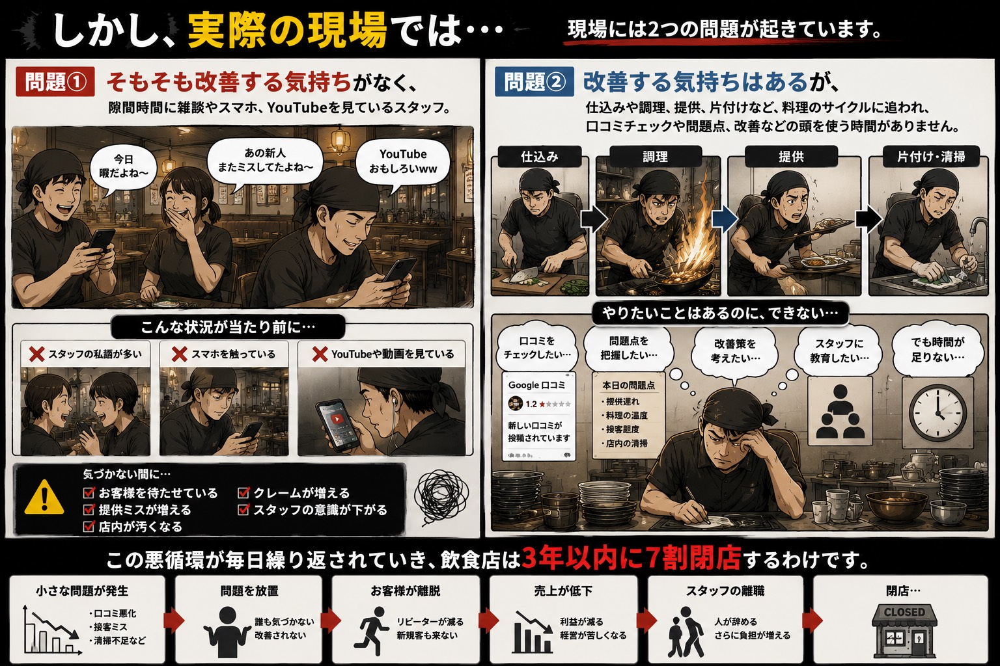
Google口コミ・氷山
今、あなたのお店で起きている現実を把握していますか？
口コミは氷山の一角です。
本当に怖いのは、何も言わずに帰ったお客様です。
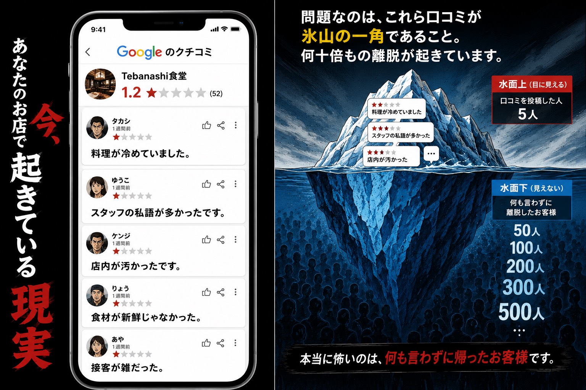
リピーター減少
小さな不満は、リピート減少につながります。
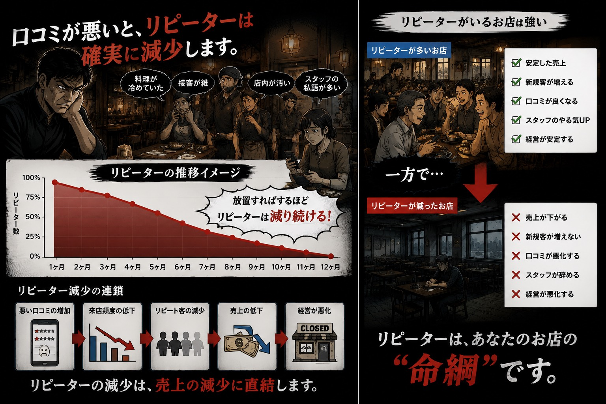
現場の現実
しかし、実際の現場では改善が進まない。
改善する気がないスタッフもいる。
改善したくても、調理・仕込み・提供・片付けに追われて時間がない店長もいる。

オーナーの本来の仕事
オーナーの本来の仕事は、無駄な時間を改善の時間に変えること。
隙間時間に娯楽エネルギーに流れているスタッフを、
お店の改善タスクへ向かわせる指示を出すことです。
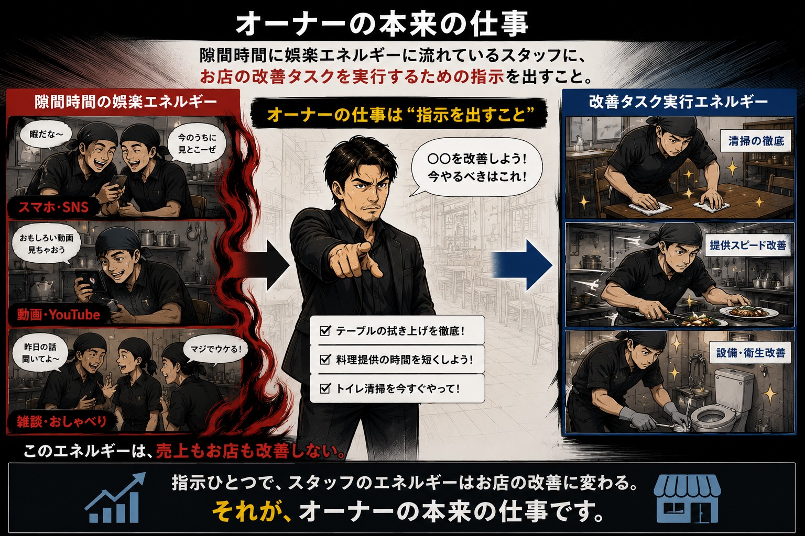
Tebanashi導入イメージ
Tebanashiは、オーナー不在でも現場を監督します。
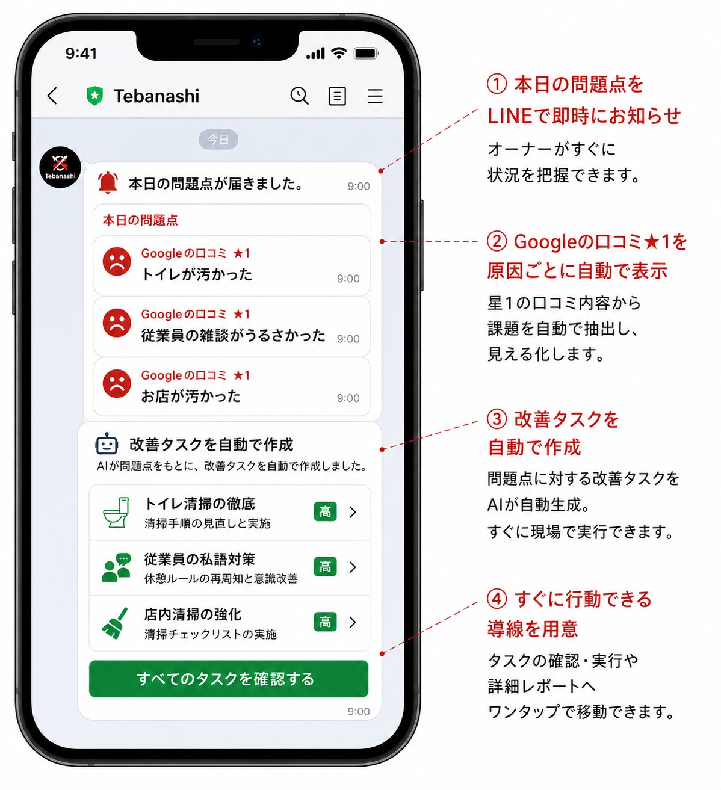

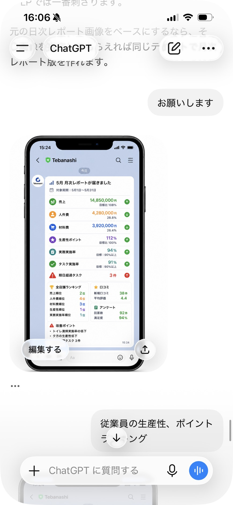
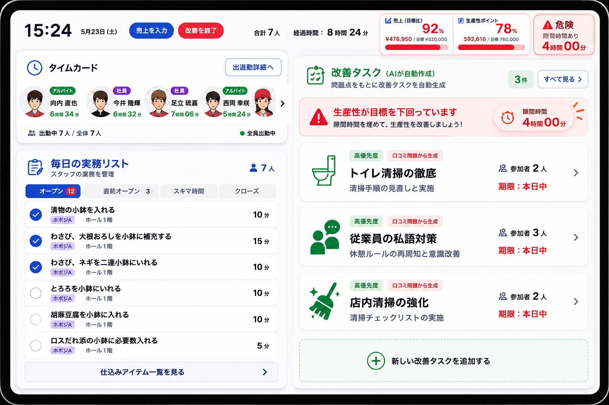
問題点をLINEで通知。
AIが改善タスクを作成。
営業中は店舗モニターに指示を表示。
1日の終わりには日次レポート。
月末には店舗ランキングと従業員評価を自動作成。
Tebanashiにできること
ネガティブな意見を自動通知
口コミ・アンケート・クレームを自動収集し、LINEへ通知。問題を即座に発見します。
問題を携帯でタスク化
「トイレが汚かった」→清掃タスク作成→店舗モニター表示→隙間時間に実施→完了写真添付。問題を改善サイクルに変換します。
遠隔現場監督
携帯で実務実施率・QSC写真・スタッフ別実施率を確認。どこにいても店舗状況を把握できます。
営業中の自動音声指示
売上・人員状況に応じて、システムが自動で音声指示。「隙間時間です。トイレ掃除を実施してください」
毎日のレポート
売上・人件費・材料費・口コミ数・ToDo実施率・未実施/超過タスクを毎日自動集計し、オーナーへ送信します。
月次改善レポート
店舗別月次レポート・従業員別評価レポートを自動生成。会議がスムーズに行えます。
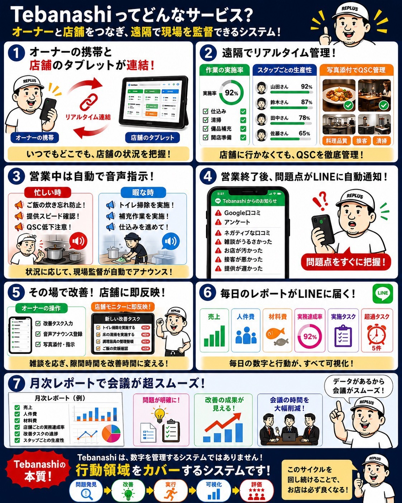
タップで拡大既存の管理システムと
バッティングしない選択！
在庫・勤怠・シフトなどの基幹管理は既存のツールをそのまま使えます。
テバナシは現場の生産性管理・評価制度・マニュアル/タスクに特化し、
現場の行動を揃えてオーナーがリアルタイムに状況を把握する「現場OS」です。
多店舗運営に効く、現場OS機能
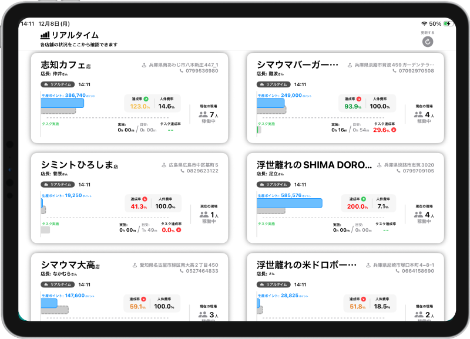
リアルタイムFL管理機能
客数・客単価・人時売上・FL比率など店舗運営の要点を1画面に集約。遅れや過剰に即座に気づけます。
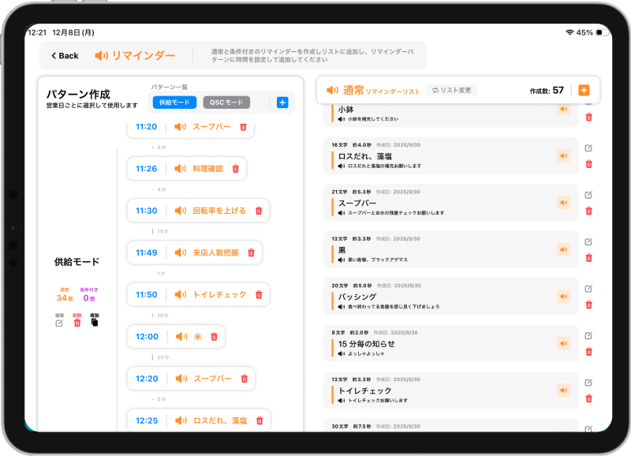
現場監督機能
店舗の売上状況を把握し、事前に準備したアナウンスを状況に応じて営業中に流せる。オーナーアカウントからリアルタイム一斉配信も可能（電話の代替として店舗従業員とコミュニケーションが可能）。
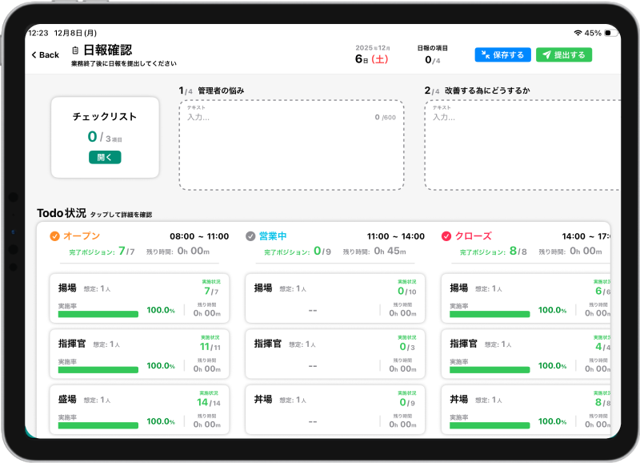
生産性可視化機能
店舗状況を「生産性ポイント」で把握。今店舗がヒマか？忙しいか？を数値化し、目標対比で高いか低いかを判定し、最適な指示を出す。
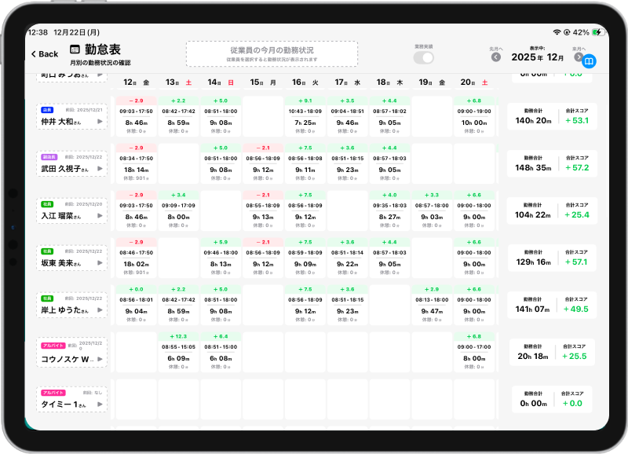
評価制度
従業員一人ひとりの実務量や、出勤日の生産性を内部計算。個人にポイントを振り分け、月末に評価ポイントとして反映させる。
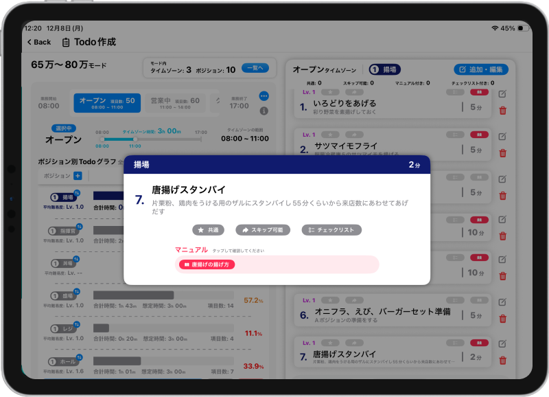
食材管理機能
仕入れ・棚卸しなど材料費管理システムを搭載。業者別・場所別などの設定が可能で、アルバイトでも簡単に入力可能。入力データはオーナー画面で売上・人件費と共に一元管理。
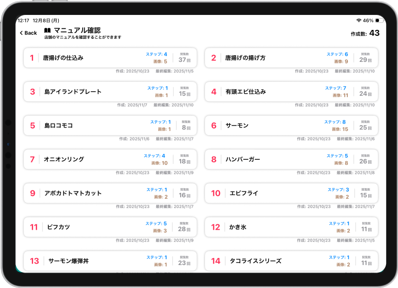
マニュアル管理機能
写真や動画でマニュアルを添付可能。ポジションごとのToDoリスト項目に直接紐づけて貼り付けが可能。
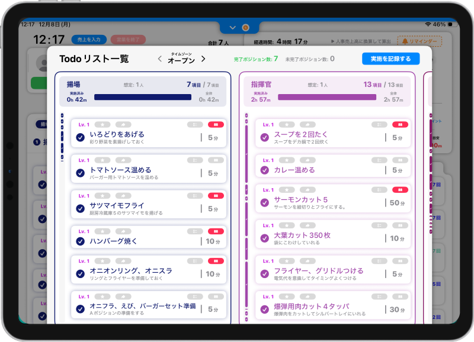
タスク管理機能
オーナー/従業員のスマホと店舗タブレットが連携し、飲食店特化型のタスク管理を実現。ヌケモレを防ぎつつ、「今日バタバタしてたので⋯」という言い訳で、タスクが実施できていない状況を変えられます。
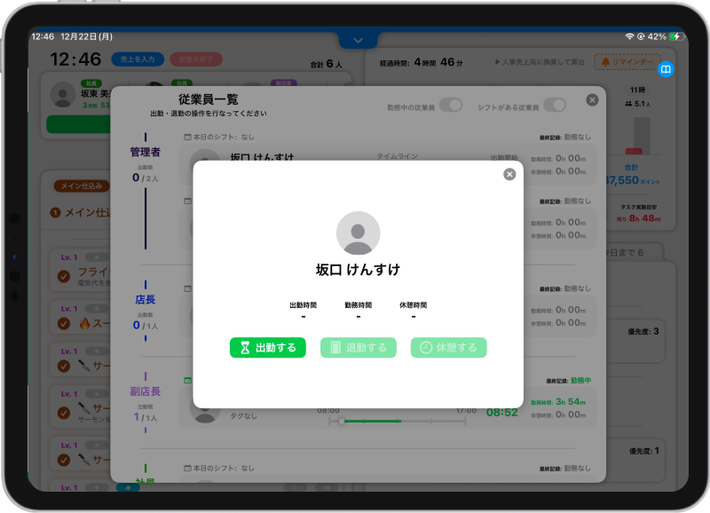
タイムカード機能
出勤時のタイムカードとして利用可能。時給入力により、店舗の生産性を詳細に把握出来ます。打刻時に任意のメッセージを表示出来るので、引き継ぎ忘れがなくなります。
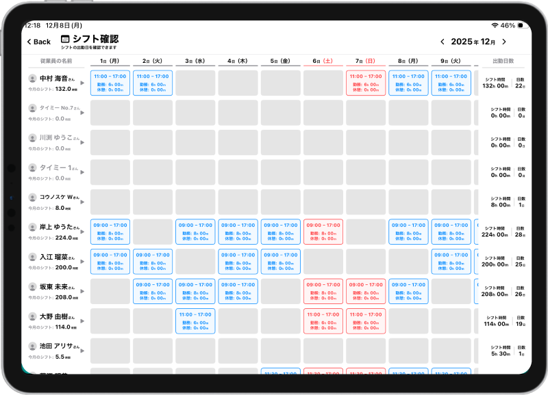
シフト最適化機能
売上目標やシフトを入力することで、人件費率を可視化。店舗ごとのToDoリスト量から「最適化率」を把握可能。
お客様の声
遠隔管理の徹底でQSCが向上
多忙なオーナーが現場に不在でも
高い品質を維持できる体制へ
導入前の課題
本業が忙しく現場への臨店が困難。QSCにバラつきが出ていた。
TEBANASHIの活用
遠隔管理システムにより、清掃状態や省エネ状況をリアルタイムにチェック。現場の規律を強化。
導入後の成果
品質と清掃が安定し、リピーターからの評価が向上。オーナー自身も他店舗の運営に専念可能に。
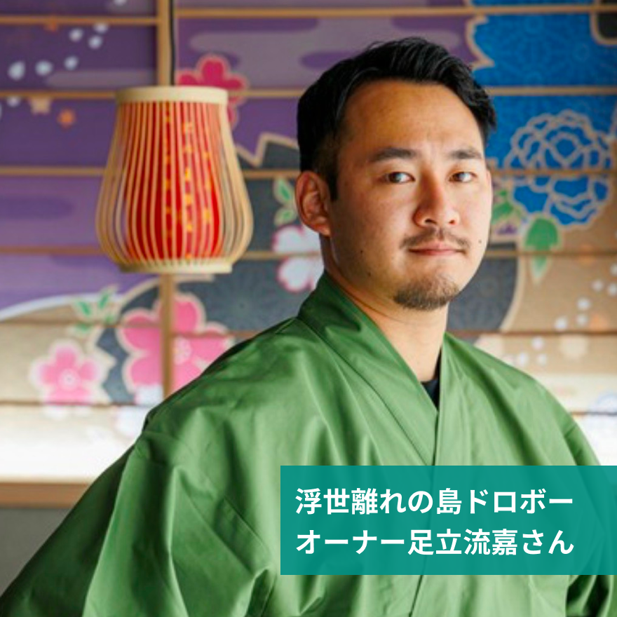
人件費の最適化と生産性向上
無駄な時間を「改善の時間」へ
スタッフの意識改革で利益率1.7倍
導入前の課題
「無駄な時間」を「改善の時間」へ。スタッフの意識改革で利益率1.7倍。
TEBANASHIの活用
シフト最適化システムを導入。個々の生産性を可視化し、空き時間を「店舗改善タスク」へ転換。
導入後の成果
人件費率を40%→30%へ削減し、売上は開業時600万→テバナシを導入して現在1,000万に。利益率は1.7倍を達成。
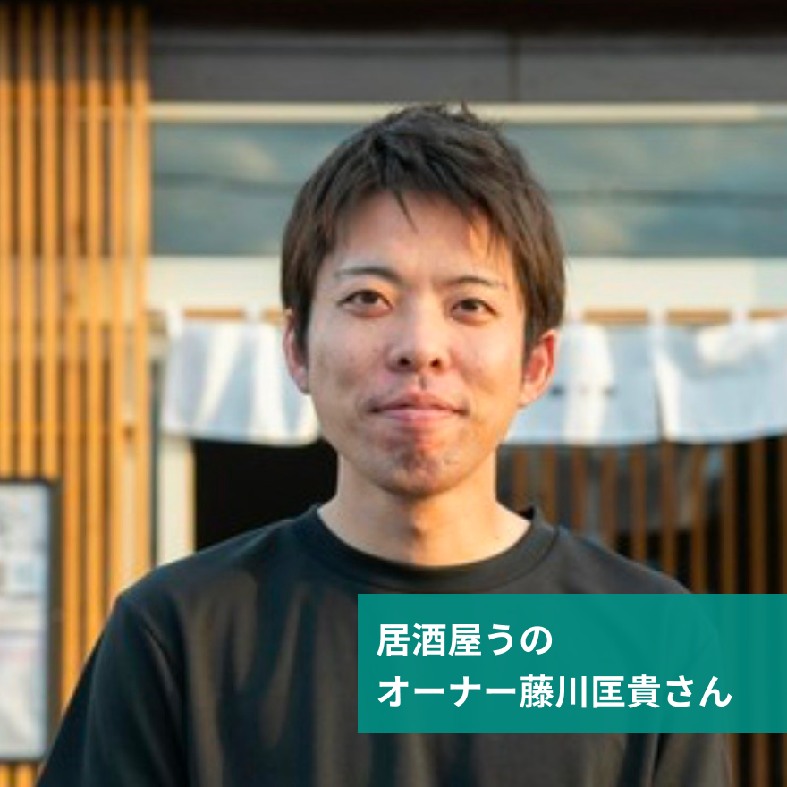
徹底した数値管理で食材費を抑制
不明瞭な廃棄や不正を根絶
理論値に基づいた運用で利益率1.2倍
導入前の課題
材料費が理論値を常に上回り、食材の廃棄や管理の不透明さが慢性化。
TEBANASHIの活用
食材管理を徹底して数値化。在庫の見える化により、発注ミスや管理者の不在によるロスを防止。
導入後の成果
材料費を38%→33%へ改善。ロスを徹底的に排除した結果、利益率は1.2倍に向上。
なぜTEBANASHIが選ばれるのか
現場の課題
飲食店の問題は、誰かがサボることでも、能力が低いことでもありません。
多くの場合、「今、何をするのが正解か分からない」ことが原因です。
TEBANASHIで「今やるべきタスク」を洗い出す
現在の「売上」「人材」「時間帯」の3つの要素から、その瞬間に最適なタスクを自動で判断・表示します。
感覚や経験に頼らず、
常に
"現場の正解"を
表示し続けます。
現場の課題
「店長は実務で手一杯」「管理は後でやるものになる」
その結果、改善サイクルが回らない状態に陥りがちです。
実務の中に「管理」と「改善」を組み込む
日々の業務を行うだけで、自動的に管理データが蓄積されていきます。
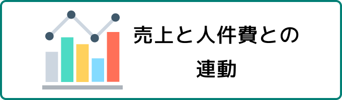
売上と人件費との連動これらが自動で残るため、管理は「別でやる仕事」ではなくなります。
気づいたら管理できている。
これが手放しの設計思想です。
現場の課題
「頑張っても、サボっても結果が同じ」
この環境では、人はだんだん適当になり、モチベーションが低下します。
「仕事の達成度」をそのまま「評価」へ
営業中のスタッフの行動履歴がすべて残るため、公平な評価制度につなげることができます。
- タスクを達成しているか
- タイミングは適切だったか
- 継続して実行しているか
文句をいう評価ではなく、
「データで見せる評価」が可能になります。
導入実績の構成比
TEBANASHIの導入実績は、10店舗〜30店舗規模のオーナー様が全体の約3割と最も多く、中規模以上の店舗展開において特に高い支持をいただいています。 店舗数が増えるほど複雑化する売上管理やオペレーションの課題を、ITの力で解決。単一店舗から50店舗を超える大規模チェーンまで、規模を問わず「現場を離れても回る経営」を実現しています。
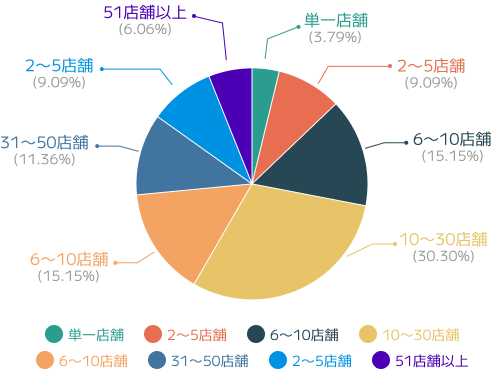
まずは、お気軽にご相談ください。
店舗の課題をTEBANASHIが解決します。
資料請求はこちら
料金プラン
店舗様の状況に応じて
選べるプランをご用意しております
ベーシック
現場を安定させる基本プラン
- QSCの遠隔管理機能
- 従業員の生産性可視化
- タスク管理機能
- 音声アナウンス機能
スタンダード
管理・数字まで踏み込む
ベーシックプランの全機能 ＋
- リアルタイム生産性可視化
- 現場監督機能
- 数字管理（FL管理）
- タイムカード機能
- 棚卸し機能
プレミアム
教育と改善・コンサル付き
スタンダードプランの全機能 ＋
- 教育サイクル機能継続的な人材育成システム
- 集客コンサル会議付きプロによる改善提案
初期費用導入時のみ発生する費用です
初期設定 / 運用設計 / 導入サポート
導入までの流れ
（有料プランの場合）
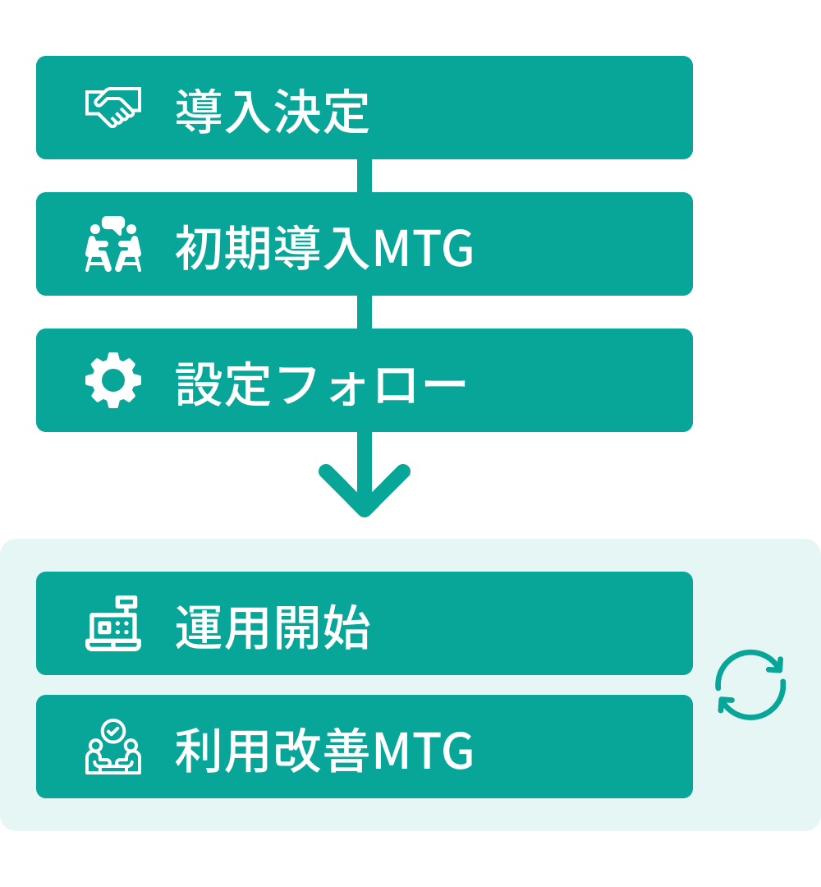
初期の設定をフォローしますので
安心して導入できます
導入が決まりましたら、担当者とミーティングをして、ヒアリングを行い、ご希望の項目に関して設定代行が可能ですので、その場合は必要なリストをご共有をいただく必要があります。また、運用開始後は定期的にミーティングを行い、利用改善を行い、テバナシの機能をフル活用してもらえるようにフォローします（ご契約プランによります）
| To Doリスト | 開店準備・閉店作業・仕込みなどの準備リストを登録します |
|---|---|
| 従業員登録 | 従業員と時給などを登録します |
| リマインダー | お音声アナウンスを1日の流れに合わせて設定します |
| 売上目標 | 平日・週末などの売上目標を設定します |
| シフト設定 | シフトのベースを作成します |
よくあるご質問
Q.現場監督アプリとは何ですか？
TEBANASHIは、飲食店の現場スタッフと管理者を繋ぎ、「手離し経営」を実現するコミュニケーションアプリです。【現場での作業】と【実施状況】がリアルタイムで確認が出来るので、現場にいなくても店の状況が把握できます。出した指示が実行されるのか？を確認することが出来るので、指示を出したままで放置されないので、キチンとお店が改善されていく様子を知ることが出来ます。
Q.導入には時間がかかりますか？
はい。最短でも1-2週間はかかります。初期設定に必要な情報を提供してもらい、弊社側で入力代行を行います。初期設定が完了したら、弊社のサポートを受けながら店舗で使い始めてもらいますが、多機能なアプリなので、最初は簡単な機能から使い始めて、打合せをしながら店舗でしっかり使ってもらえる状態になるまでサポートします。
Q.サポート体制はどうなっていますか？
導入から運用まで、専任のコンサルタントが手厚くサポートいたします。初期設定のアドバイスはもちろん、運用定着のためのフォローアップ、活用事例の共有、スタッフへの浸透施策のご提案まで、「手離し経営」が実現するまで伴走します。チャットやメール、電話でのサポートも随時対応可能。飲食店経営に精通した専門チームが、あなたのビジネスの成長をバックアップします。
Q.複数店舗でも使用できますか？
はい、もちろんです。TEBANASHIは複数店舗の一元管理に最適な設計です。各店舗の日報や報告を一つのダッシュボードで確認でき、店舗間の情報共有や好事例の横展開もスムーズに。店舗が増えるほど、情報の見える化と自主性の育成効果が高まります。フランチャイズ展開や多店舗経営の効率化に、多くのオーナー様にご活用いただいています。
Q.料金プランはどうなっていますか？
シンプルで分かりやすい料金体系をご用意しています。初期費用と月額利用料のみで、店舗数や利用人数に応じた柔軟なプランをお選びいただけます。詳細はお問い合わせください。無料トライアル期間もご用意していますので、まずは実際の使い心地を体感していただけます。
Q.スタッフが機械に不慣れでも使えますか？
はい、問題ありません。TEBANASHIは「誰でも直感的に使える」ことを最優先に設計されています。普段スマホでSNSを使っている方なら、すぐに操作を覚えられるシンプルなUI/UX。年齢やITスキルに関係なく、現場スタッフ全員が迷わず使える工夫が随所に施されています。
弊社直営店の実績
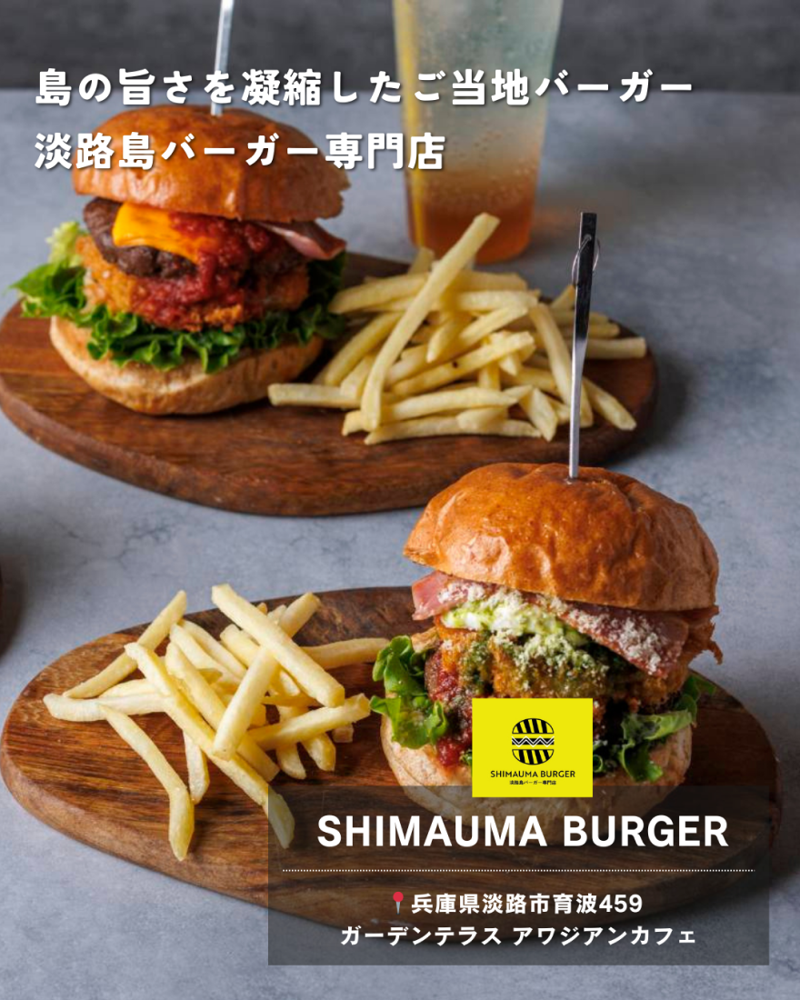
しまうまバーガー
テバナシのタスク管理機能によりスタッフの業務負担を均等化してシフトの効率化を推進しました。
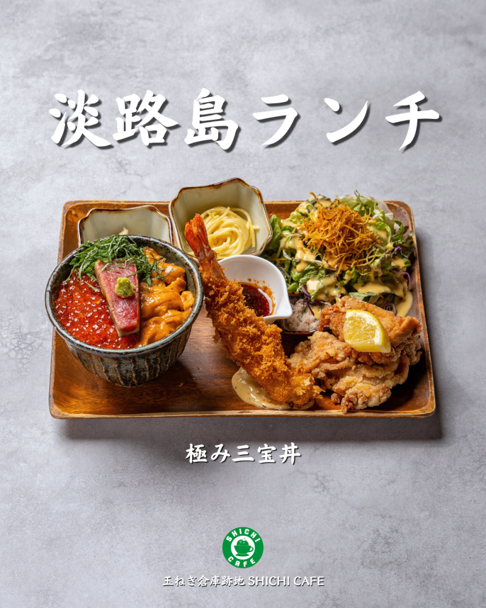
玉ねぎ倉庫跡地志知カフェ
繁忙時はスタッフの配置を強化してオフピーク時には省エネ機能でコストを抑制いたしました。
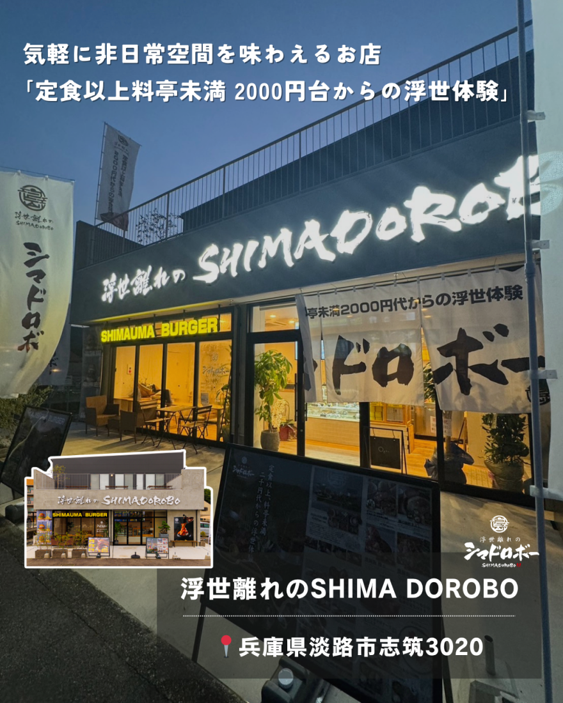
浮世離れのSHIMA DOROBO
データを基に食材調達を最適化することで経費比率を改善して収益性の向上を実現しました。
飲食店には
「見えている問題」と
「変わらない現場」の
溝があります
FL管理・棚卸し・会議は大切ですが、それらはすべて過去の記録。
お店を変えるのは、記録ではなく「行動」です。
この溝でお困りの方は、お気軽に資料をご覧ください！
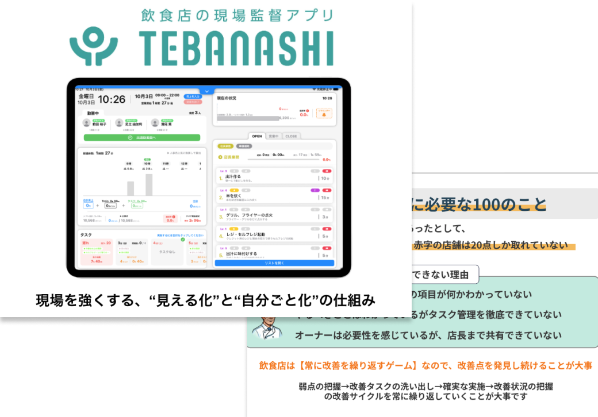
この資料でお店の問題の理由が分かります！
- TEBANASHIの機能概要と導入メリット
- 成功事例から学ぶ！TEBANASHI活用方法
- FLコスト18%削減、管理時間90%短縮の事例
- FLが荒れる理由を解明し、具体的な改善策を提示
- デジタルマニュアルで新人教育を効率化、即戦力に
TEBANASHIをはじめて知っていただく方に向けた、基本機能や活用シーンの紹介。新たな価値提案をわかりやすく掲載しております。
TENABASHIの機能概要と、導入することで得られる業務管理90%削減、売上139%増加を実現！忙しいオーナーのための経営DXソリューションを簡単にご理解いただける資料です。